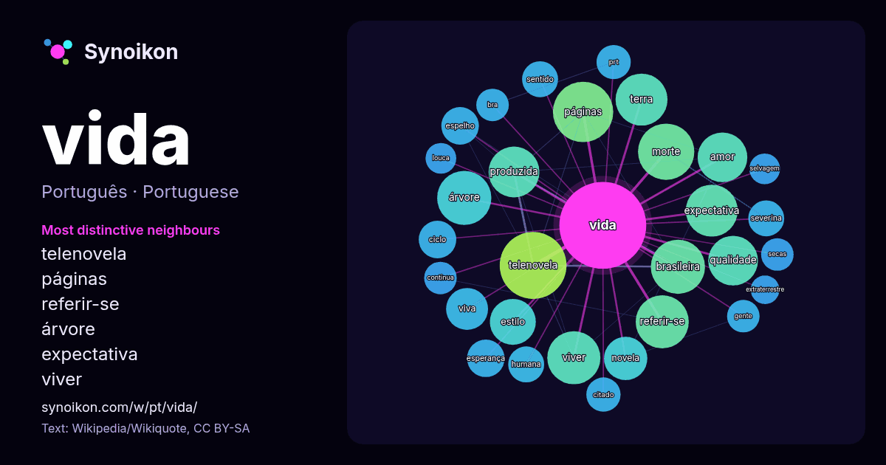

Português · palavra popular
vida
“life” · As palavras encontradas ao seu redor em 1225 ocorrências da Wikipédia, Wikiquote.

Vizinhos mais característicos
- telenovela 32×
- páginas 28×
- referir-se 24×
- árvore 22×
- expectativa 21×
- viver 20×
- produzida 18×
- qualidade 15×
- viva 14×
- amor 14×
- novela 12×
- espelho 12×
- severina 12×
- esperança 11×
- prt 11×
- brasileira 11×
- ciclo 10×
- morte 10×
- citado 9.9×
- bra 9.7×
× = quantas vezes mais do que no texto geral da Wikipédia.
Vizinhos mais frequentes
- telenovela 38
- páginas 31
- morte 27
- árvore 25
- brasileira 25
- filme 25
- jogo 25
- álbum 24
- referir-se 24
- viver 24
- expectativa 23
- terra 23
- produzida 22
- amor 21
- brasil 21
- qualidade 21
- estilo 18
- série 17
- novela 16
- viva 15
Em contexto
- Nota: Para outros significados, veja Vida (desambiguação). Vida é uma característica que distingue entidades físicas que têm processos biológicos, como Wikipedia snippets · Vida
- remake de 2026, veja Páginas da Vida (2026). Para outros significados, veja Páginas da Vida (desambiguação). Páginas da Vida é uma telenovela brasileira produzida Wikipedia snippets · Páginas da Vida
- Minha Casa, Minha Vida (PMCMV) é um programa habitacional do governo federal brasileiro, instituído em março de 2009, durante o segundo governo de Luiz Wikipedia snippets · Minha Casa, Minha Vida
- Rede Manchete, também escrita por Manoel Carlos, veja Viver a Vida (minissérie). Viver a Vida é uma telenovela brasileira produzida e exibida pela TV Globo Wikipedia snippets · Viver a Vida (telenovela)
- Amor à Vida é uma telenovela brasileira produzida e exibida pela TV Globo de 20 de maio de 2013 a 31 de janeiro de 2014, em 221 capítulos. Substituiu Salve Wikipedia snippets · Amor à Vida
- atriz Ana Paula Arósio) e Êxtase. Também é autor de livros infantis, como Vida de droga e O Menino Narigudo, usados como livros paradidáticos nas escolas Wikipedia snippets · Walcyr Carrasco
- Vida Vida é o décimo álbum de estúdio gravado pelo grupo carioca Roupa Nova em 1994. Obteve grande êxito principalmente com as canções "A Viagem", que Wikipedia snippets · Vida Vida
- Amor da Minha Vida é uma série de televisão brasileira de comédia romântica produzida pela Barry Company em parceria com a Intro Pictures para o Disney+ Wikipedia snippets · Amor da Minha Vida (telessérie)
Mais palavras
- arte
- ciência
- clima
- comida
- coração
- cão
- deus
- dinheiro
- família
- força
- gato
- história
- língua
- morte
- natureza
- ouro
- ponte
- saúde
- trabalho
- trem
- verdade
- água
Pré-calculado em 2026-10-09 com as configurações padrão (±5 palavras, corpus médio). O mapa interativo pode atualizá-lo com dados ao vivo.
Interface traduzida automaticamente; correções são bem-vindas.